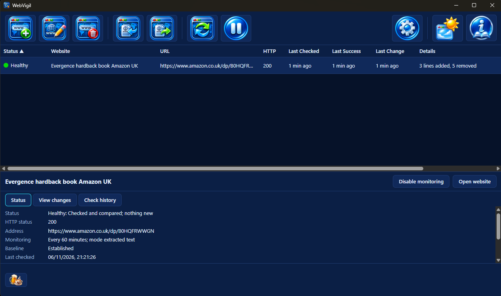
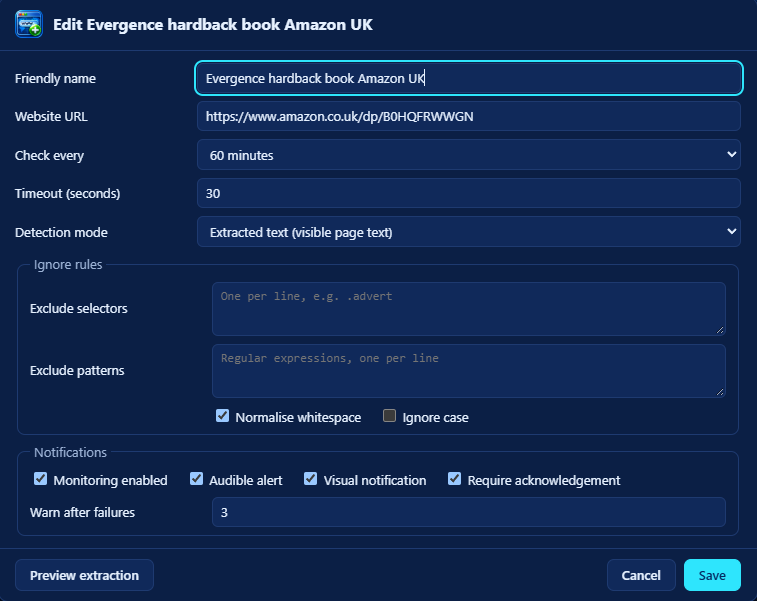

v1.0.1 Windows, macOS, Linux Free and open source
Watch the web. Know what changes.
WebVigil checks the pages you choose on your schedule. It tells you when their meaningful content changes: exactly what changed, line by line. When a check fails it says why, in words you can act on, instead of showing you an old page as if nothing were wrong.

Why it exists
Stop reopening the same page to see whether anything moved.
A price, a stock notice, a policy page, a release list, a timetable: some pages matter only when they change; the only way to find out is to keep looking. WebVigil does the looking. It reads each page, compares what it found with the last version it accepted and stays quiet until there is something to say.
It is deterministic: a change is a difference in the content you chose to watch, found by comparison and never by guesswork. It is local: your sites, their snapshots and their history live on your computer and nowhere else.
How it works
Choose what to read. WebVigil does the rest.
- Add a page and choose what counts: its visible text, the text of chosen CSS selectors, a set of named fields or the raw response. Exclude adverts, counters and timestamps with selectors and patterns. Preview extraction shows exactly what will be compared before you save.
- WebVigil checks it on its own interval, five minutes at the shortest. The first successful check becomes the baseline and raises nothing.
- A change raises your alarm: a chime or your own sound, a desktop notification, either or both. The site turns amber and waits for you to acknowledge it, with the change shown as a line diff.
- A failure is named: DNS, a refused or timed-out connection, TLS, the HTTP status, a missing selector, a challenge page. It never hides a change still waiting.

At a glance
Four lights, each told by shape and word as well as colour.
Pending
No successful baseline yet.
Healthy
Checked and compared; nothing new.
Changed
A change awaits acknowledgement.
Failed
The latest check failed, with the reason shown.
The feature list
What it does. What it deliberately does not.
What it does
- Ignores what does not matter. Excluded selectors and text patterns are removed before comparison; whitespace can be collapsed and case folded.
- Knows Amazon product pages. Amazon reshuffles adverts and menus on every load. An Amazon product address fills in the title, author, prices, rating, reviews, description, cover and details as fields, so only the product itself can raise an alarm.
- Checks politely. At most four checks at once, one host never asked twice within ten seconds, conditional requests when nothing changed and a back-off of up to a day while a site keeps failing (or its own interval, for a site checked less often).
- Keeps the history. Every check with its outcome and status; every change as a line diff or a list of changed fields.
- Imports and exports site definitions as JSON, previewed first, with a site you already watch skipped unless you say otherwise.
- Stays out of the way. On Windows, closing the window asks whether to keep it running in the tray or to quit; on macOS and Linux it watches while its window is open. It can start when you sign in.
- Explains itself. A Guide to every control and rule, light and dark appearance and a check for new versions.
What it does not do
- Run a page's JavaScript. It reads the HTML the server sends; a page that is empty until script runs is reported, not worked around.
- Log in. No passwords, cookies or sessions are stored.
- Get past CAPTCHAs. A challenge page is recognised and reported; it is never solved or disguised against.
- Use AI. Changes are found by comparison, never by interpretation.
- Phone home. No telemetry and no accounts. Beyond the pages you watch, its one request asks GitHub for its latest release, carrying no identifier and nothing about your sites.
- Run as a background service. Checks run while WebVigil is running, never before you sign in.
Download
Install it once. Stop refreshing.
Version 1.0.1Windows
Windows 10 or 11 on x64, with the Microsoft WebView2 runtime
Download for WindowsRun it and choose Install. It installs for your account only, so Windows never asks for administrator rights. Running it again offers Update, Go back or Repair, with Uninstall beside each; uninstalling keeps your websites and history unless you ask for them to be deleted.
macOS
Apple Silicon (M1 or later)
Download for macOSOpen the disk image and drag WebVigil into Applications.
Linux
Any distribution with Flatpak
Download for LinuxInstall it with flatpak install --user webvigil.flatpak;
the runtime it needs comes from Flathub.
What is new in this release · All releases · Source on GitHub
Supporting WebVigil
Free. It stays free.
There is no paid tier, no licence key and no feature held back behind a donation. If WebVigil has saved you a few hundred refreshes, a contribution supports its maintenance and continued development. The same link sits in the strip along the foot of the window.